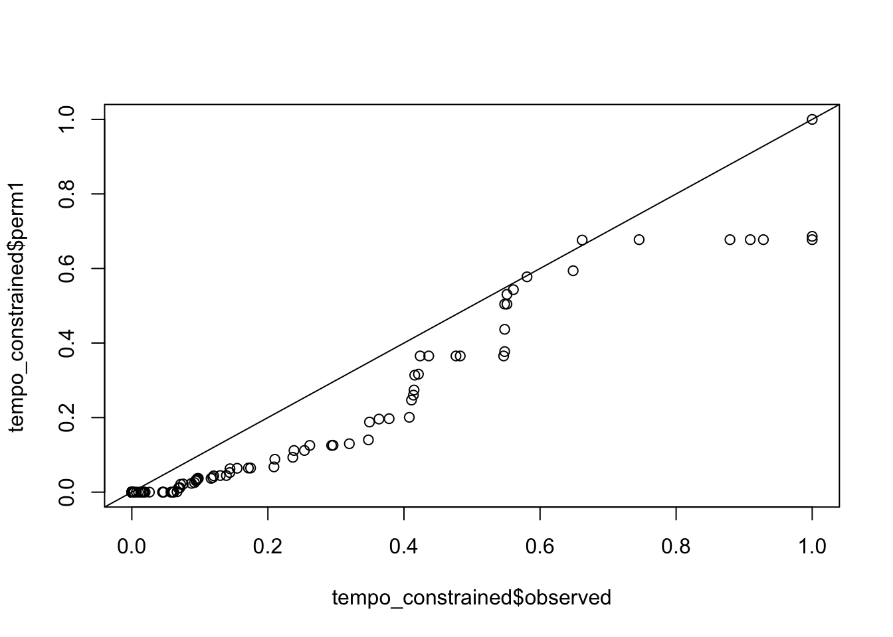

We want to investigate whether reaction rates estimated with imat(?) are heritable. Reaction rates (binary variables) were estimated by D using GTEx gene expression data.
Initially, D generated reaction rates with brain cortex expression data from ~250 individuals.
Heritability of reaction rates was calculated with GCTA. Actual observed h2 and two permuted h2 values are compared next. Spoiler alert: no difference between actual and permuted values. :(
tempo = read_tsv(glue::glue("{DATA}/df.GTEX.txt"))## Parsed with column specification:
## cols(
## Phenotype = col_double(),
## H2 = col_double(),
## Perm1 = col_double(),
## Perm2 = col_double(),
## `H2 constrained` = col_double(),
## `Perm constrained 1` = col_double(),
## `Perm Constrained 2` = col_double()
## )tempo_constrained = tempo %>% select(pheno=Phenotype,observed=`H2 constrained`, perm1=`Perm constrained 1`, perm2=`Perm Constrained 2`)
tempo_constrained %>% pivot_longer(-pheno, names_to = "type", values_to="h2") %>% ggplot(aes(h2)) + geom_histogram() + facet_wrap(~type)## `stat_bin()` using `bins = 30`. Pick better value with `binwidth`.qqplots comparing actual vs permuted h2
qqplot(tempo_constrained$observed, tempo_constrained$perm1); abline(0,1)
qqplot(tempo_constrained$observed, tempo_constrained$perm2); abline(0,1)